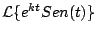
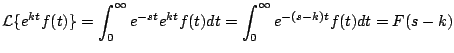
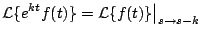
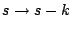
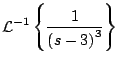
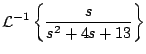

|
|
|
|
|Instituto Tecnológico de Costa Rica|Escuela de Matemática| M. Sc. Geovanni Figueroa M. |
1 2
3 4 5
6 7
8 9
10 11
12 13
14 15
16
|
|
Teoremas de traslación No es adecuado utilizar la definición cada vez que se quiera calcular una transformada, por ejemplo, la integración por partes involucrada al calcular , es bastante tediosa. Por esta razón vamos a enunciar algunos teoremas que ahorran trabajo en el cálculo de este tipo de transformadas.
Si conocemos que
Demostración
La prueba es inmediata apartir de la definción

Observación: si consideramos a

donde
 significa que se sustituye Ejemplo
Solución
Usando el primer teorema de traslación
Ejemplo

Solución
Ejemplo

Solución
Subsecciones
|